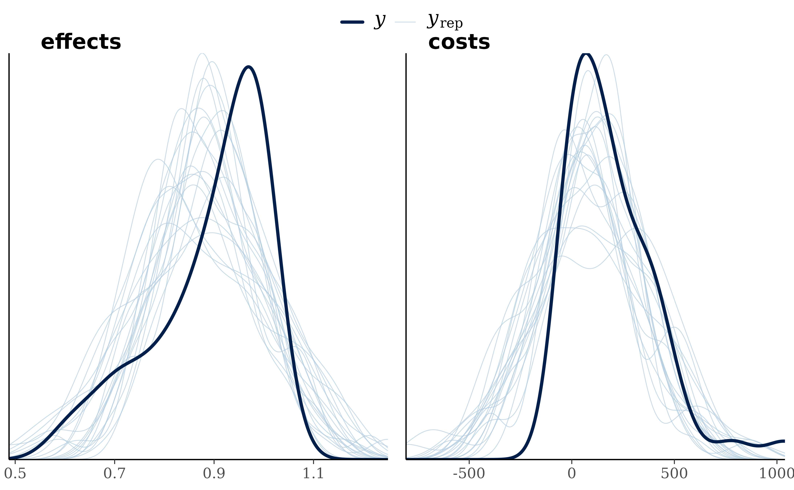
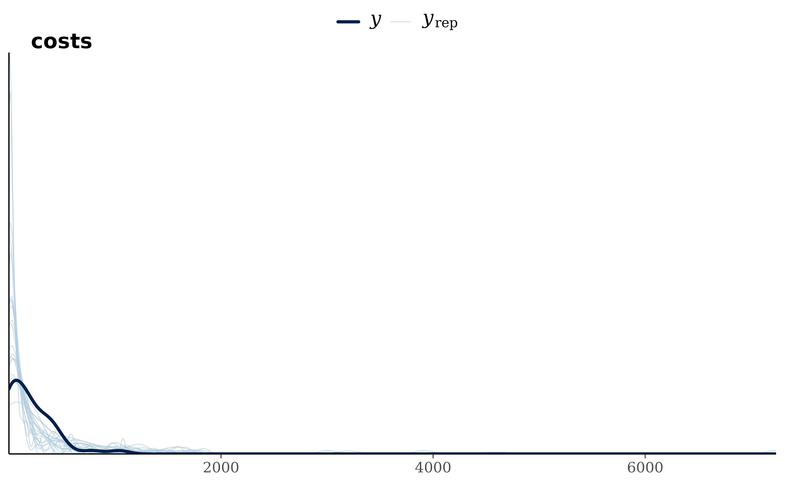
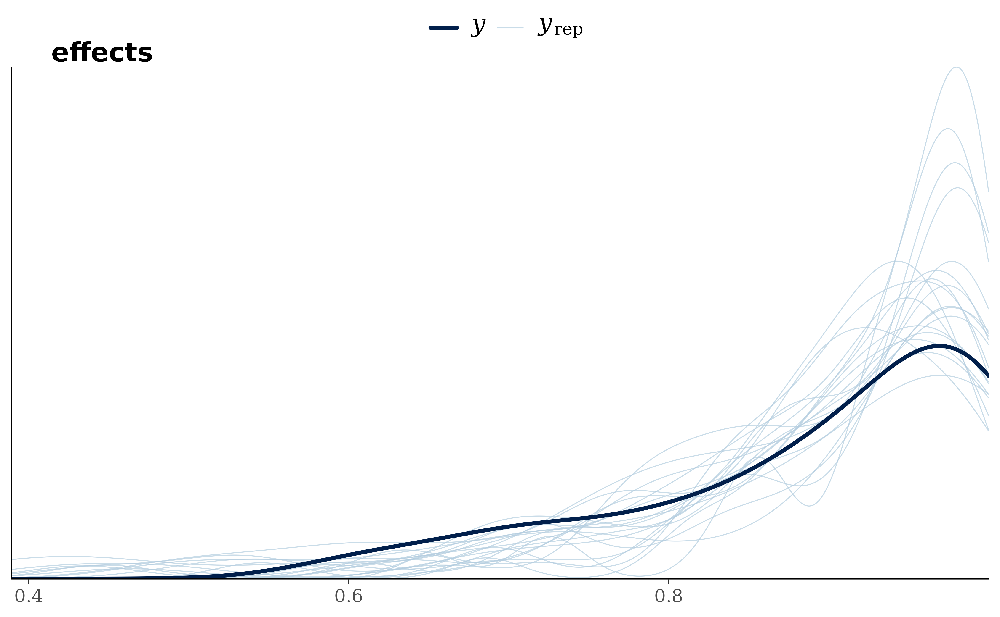
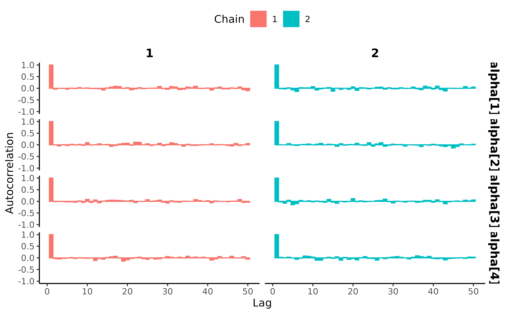

Model and output customisation in missingHE
Source:vignettes/Model_customisation_in_missingHE.Rmd
Model_customisation_in_missingHE.RmdEach fitting function in missingHE provides a series of
options, which allow the user to customise the missingness approach in
terms of modelling assumptions and output manipulation. Examples
include: choice of outcome and prior probability distributions, model
structure, missing data assumptions, type of diagnostic and model
assessment measures, choice of numeric and graphical posterior
summaries. This high level of flexibility aims at facilitating the tasks
of the user for the implementation of the health economic analysis,
interpretation of key parameters as well as the need to assess model
performance and conduct sensitivity analysis.
This tutorial illustrates how to customise different types of models
in missingHE using the arguments available inside the
functions of the package. For illustration purposes, the built-in
datasets MenSS and PBS will be used, which are
directly available when loading missingHE in the user’s
R workspace. See Introduction to missingHE and
Longitudinal models in
missingHE for an overview of the different modelling approaches
available in missingHE as well as some examples on how to
implement them using default choices.
If you would like to have more information on the package, or would like to point out potential issues in the current version, feel free to contact the maintainer at a.gabrio@maastrichtuniversity.nl. Suggestions on how to improve the package are also very welcome. A development version of the package is also available from the author’s main GitHub repository at https://github.com/AnGabrio/missingHE.
Modelling assumptions
Many customisation options of the modelling approaches available in
missingHE are shared across the four main functions of the
package, namely selection (selection models),
pattern (pattern mixture models), hurdle
(hurdle models) and lmdm (longitudinal missing data model).
Among these, key options include:
- distributional assumptions about the outcome variables
- type of missingness mechanism
- specification of the outcome model structure
- prior distributions
Other options are instead specific to the type of modelling approach selected and are therefore not applicable to all functions. Among these, key examples include:
- specification of the model for the missingness mechanism in each
outcome (relevant only for
selectionandlmdm) - type of identifying restrictions imposed (relevant only for
pattern) - specification of the model for the structural value mechanism and
type of structural values for each outcome (relevant only for
hurdle) - specification of the time dependence structure (relevant only for
lmdm)
In the following, a general overview of the choices available in
missingHE is presented. An application of the methods to
the two built-in datasets of the package will be used as a demonstrative
example to illustrate the impact of these choices on the analysis
results.
Outcome distribution
Choice of the distribution for the outcome variables is typically informed based on the characteristics of the observed data by checking whether possible inconsistencies between distributional assumptions and observed data occur. A common example is given by assuming both effectiveness and cost variables to be normally distributed. Indeed, provided a sufficient sample size is obtained from the study data, the sampling distribution of the sample mean will be normal. In CEA, however, the context of the analysis poses some challenges which may violate this assumption: 1) sample sizes about health economic outcomes are often limited and further reduced by considerable proportions of missing values; 2) a combination of data features that violate normality are often present in the observed data (e.g., skewness); 3) interest is not in statistical inference but rather in uncertainty assessment and quantification. The occurrence of these elements lead analysts to consider alternative distributional forms for the modelling of cost-effectiveness outcomes, in an attempt to improve the fit and convey more robust results.
missingHE allows the user to choose among a set of
pre-defined parametric forms for the distribution of the effectiveness
and cost outcomes, which are shared across all model fitting functions
in the package. The choice of the available distributions was informed
based on the current methodological literature and may be conveyed to
the desired package function by passing a specific character name to the
arguments dist_e and dist_c. In particular,
the set of distributions available (with associated character names)
is:
effectiveness: Normal (
"norm"), Gamma ("Gamma"), Beta ("Beta"), Logistic ("logis"), Weibull ("Weib"), Poisson ("Pois"), Negative Binomial ("Negbin"), Bernoulli ("Bern").costs: Normal (
"norm"), Gamma ("Gamma"), Lognormal ("lnorm").
Note that, while costs are usually expressed in monetary terms and can be modelled using continuous distributions, the level of measurement of effectiveness variables may differ according to the specific outcome considered.
To illustrate how alternative distributions may be assumed in
missingHE, we use the built-in dataset MenSS
as a toy example. The data come from a pilot randomised trial on young
males at risk of sexually transmitted infections (STIs) which, among its
objectives, included the cost-effectiveness assessment of the
MenSS’s Safer Sex (MenSS) intervention compared to Standard
of Care (SoC). Key variables in MenSS include: Total
costs and QALYs computed over the trial period (c and
e); number of sexual intercourses ("sex_inst")
and whether an STI was diagnosed ("sti") at follow-up;
baseline values for all effectiveness variables and demographics,
treatment ("trt") and site ("site")
indicator.
Three different selection models are fitted using the function
selection to conduct the cost-effectiveness assessment
under a Missing At Random (MAR) assumption. The models differ
in terms of the distributional assumption for the two health economic
variables, namely QALYs (e) and Total costs
(c):
- Model 1: Bivariate Normal for both
eandc - Model 2: Normal for
eand Gamma forc - Model 3: Beta for
eand Gamma forc
Prior to fitting the model, the data are pre-processed by: replacing
the default levels for the factor variable trt
(
and
)
with the actual treatment names ("SoC" and
"MenSS"); add/subtract to the cost/QALY data a small
constant of
to allow estimation of Gamma and Beta distributions, whose support does
not include
and
,
respectively.
> #rename trt levels
> MenSS$trt <- factor(MenSS$trt)
> levels(MenSS$trt) <- c("SoC", "MenSS")
> MenSS$e <- MenSS$e - 0.01 #ensure no ones QALYs occur
> MenSS$c <- MenSS$c + 0.01 #ensure no zero costs
>
> #fit models with different distributions for outcomes
> #1=Normal-Normal
> sm1_nn <- selection(data = MenSS, dist_e = "norm", dist_c = "norm",
+ model.eff = e ~ trt, model.cost = c ~ trt + e,
+ model.me = me ~ 1, model.mc = mc ~ 1,
+ type = "MAR", n.iter = 1000, ref = 2)
> #2=Normal-Gamma
> sm1_ng <- selection(data = MenSS, dist_e = "norm", dist_c = "gamma",
+ model.eff = e ~ trt, model.cost = c ~ trt + e,
+ model.me = me ~ 1, model.mc = mc ~ 1,
+ type = "MAR", n.iter = 1000, ref = 2)
> #3=Beta-Gamma
> sm1_bg <- selection(data = MenSS, dist_e = "beta", dist_c = "gamma",
+ model.eff = e ~ trt, model.cost = c ~ trt + e,
+ model.me = me ~ 1, model.mc = mc ~ 1,
+ type = "MAR", n.iter = 1000, ref = 2)Before looking at the results, it is generally a good idea to assess
the fit of the model to the observed data to inform the decision of
which model to be favour. Within the Bayesian framework, alternative
approaches to model selection based on performance measures are
available. missingHE allows the user to compute three types
of predictive information criteria (PIC) using the
pic function. The criteria include: Deviance
Information Criterion (DIC); Widely Applicable Information
Criterion (WAIC); Leave-One-Out Information Criterion
(LOOIC).
The following code shows how the results of any model fitted in
missingHE may be passed to the argument x of
pic to compute the desired criterion. In particular, we
pass the model objects into pic as a list and select
"looic" as value for criterion to indicate
that we want the LOOIC criterion to be computed for all models. Finally,
we store the results into a new list object called
looic_m123 and print out the computed criteria for each
model by accessing the inner object looic_m123$pic.
> #estimate looic for all models based on complete cases
> looic_m123 <- pic(x = list(sm1_nn, sm1_ng, sm1_bg),
+ criterion = "looic", cases = "cc")
> #print criteria for each model
> looic_m123$pic
#> LOOIC model 1 LOOIC model 2 LOOIC model 3
#> 806.6166 646.1595 602.4775The printed estimates suggest a generally better fit for model 3
compared to model 2 and model 1, as indicated by lower LOOIC values.
This is in line with the expectation that distributions that capture
skewness, such as Gamma and Beta, tend to have a better fit to empirical
data showing such features. Note that the criteria were generated by
setting cases to "cc", that is their
calculation was only based on the complete cases. Alternative cases
choices are: available effectiveness cases ("ac_e"),
available cost cases ("ac_c") and all cases
("all"). Although it is possible to compute the criteria
based on imputed cases, it is generally recommended to assess the model
fit only based on the observed cases (or after integrating out the
missing values). Thus, care should be used when interpreting PIC results
directly computed based on some imputed data.
Depending on the type of criteria, pic provides
additional output related to the computation of the quantity. The object
looic_m123 is a list which stores several elements that
were used in the computation of LOOIC (pic) for each model,
such as estimates for the effective number of parameters
(peff) as well as standard error estimates of
pic_se and peff_se. These elements can be
accessed in a similar way to what shown for the main LOOIC quantities.
For instance, the following command can be used to access
peff estimates used in the calculation of LOOIC for each
model.
> #print peff values
> looic_m123$peffAn alternative approach to assess model fit is to generate data
replications and compare them to the original data to assess the
absolute predictive performance of the model: if the model is
reasonable, the replications should look similar to the original data.
To this purpose, missingHE allows the user to compute a
series of graphical and/or numeric posterior predictive
checks (PPC) using the function ppc.
As an example, the following commands generate posterior density
plots for a total of
replications of QALYs and/or Total costs under each model, which are
compared to the empirical densities of the observed outcomes. The
arguments inside ppc can be used to customise the resulting
plot:
-
typeindicates the type of plot. Choices include commonly used graphical (e.g., density, histogram, boxplot, etc.) and numeric (e.g., summary statistics, Bayesian posterior predictive p-value, etc.) outputs. -
outcomeindicates the outcome, either effectiveness ("effects"), costs (costs), or both ("both"). -
ndisplayindicates the number of data replications to be generated to compute the desired plot/measure. -
trtindicates the treatment(s). Accepted values are: a numeric value or factor level denoting the ordered position or name of the arm of interest, a character name for all arms ("all") or a character name for all data pulled across arms ("none").
> #compare densities of observed vs replicated outcome data under each model
> ppc_dens_m1 <- ppc(x = sm1_nn, type = "dens_overlay", outcome = "both",
+ ndisplay = 20, trt = "none")
> ppc_dens_m2 <- ppc(x = sm1_ng, type = "dens_overlay", outcome = "costs",
+ ndisplay = 20, trt = "none")
> ppc_dens_m3 <- ppc(x = sm1_bg, type = "dens_overlay", outcome = "effects",
+ ndisplay = 20, trt = "none")
Posterior densities of 20 replicated data under model 1 compared to the empirical density of the original data.

Posterior densities of 20 replicated data under model 2 compared to the empirical density of the original data.

Posterior densities of 20 replicated data under model 3 compared to the empirical density of the original data.
Figure @ref(fig:figplotppc1), Figure @ref(fig:figplotppc2) and Figure @ref(fig:figplotppc3) show how the predictive performance of the models changes considerably depending on the specific distributional assumptions made about the outcome variables. In particular, under normality (model 1), replications for both effects and costs fail to capture the skewness observed in the empirical data distributions. Conversely, replications generated using Gamma (model 2) and Beta (model 3) distributions seem to better capture the features of the empirical cost and effectiveness data, respectively.
Missingness mechanism
Choice of the missingness mechanism for the outcomes is very difficult unless strong justifications can be provided for the exclusion of some assumptions. According to Rubin’s taxonomy, the types of mechanisms can be generally represented into two distinct groups: Missing At Random (MAR) and Missing Not At Random (MNAR), which differ according to whether the missingness probability is assumed to exclusively depend on observed quantities or not, respectively. Note that, in the literature, a third class called Missing Completely At Random (MCAR) is often considered which, however, is a subclass of MAR where the missingness probability does not depend on any observed or unobserved variable (i.e., it is totally random). Depending on the modelling approach, assumptions about the missingness mechanism can be encoded into the model in different ways. For example, selection models directly allow the specification of the missingness probability model, while pattern mixture models implicitly define the mechanism class based on the type of restrictions imposed to identify the outcome distributions in each pattern.
missingHE allows the specification of either a MAR or
MNAR assumption about the effectiveness and cost missingness mechanisms
through the argument type. All the selection models fitted
to the MenSS dataset were estimated under a MAR assumption,
where the missingness outcomes’ probabilities (model.me and
model.mc) were assumed to not depend on any variable.
Although this might be reasonable in some cases, it is generally more
plausible that some observed variables provide some information that can
help to improve estimation of the missingness probabilities.
The following code shows how estimation of selection models can be
extended to include additional observed variables as predictors inside
the missingness models to make the MAR assumption more plausible. As an
example, and for ease of presentation, we consider here only model 1 and
include as possible predictors into model.me and
model.mc the baseline utilities (u.0) and age
(age) variables.
> #fit selection model 1 (Normal-Normal) under MAR conditional on u.0 and age
> sm1_nn_mar <- selection(data = MenSS, dist_e = "norm", dist_c = "norm",
+ model.eff = e ~ trt, model.cost = c ~ trt + e,
+ model.me = me ~ u.0 + age, model.mc = mc ~ u.0 + age,
+ type = "MAR", n.iter = 1000, ref = 2)Posterior summaries for all model parameters may be inspected using
the postsum function. The argument display may
also be used to select the group of parameters for which the output
should be printed out, with choices being: fixed effects
("fixed"), random effects ("random"),
individual-specific parameter estimates ("conditional"),
point-wise log-likelihood values ("loglik"), imputed values
("mis"). For example, estimates for the “fixed effects”
parameters (default) from sm1_nn_mar may be displayed by
typing
> #print posterior summaries for fixed effects
> postsum(x = sm1_nn_mar, display = "fixed")
#> mean sd 2.5% 50% 97.5% Rhat n.eff
#> alpha[1] 0.8946066 0.02234853 0.85220858 0.8950471 0.9383649 1.00 1000
#> alpha[2] -0.0024451 0.03420813 -0.07016378 -0.0022852 0.0630928 1.00 1000
#> beta[1] 82.5065650 25.73207599 28.64137711 83.2111609 131.5135984 1.01 220
#> beta[2] 25.1451048 28.62972276 -28.31254587 23.7164217 83.7937257 1.00 1000
#> beta_f -5.5474010 31.22835079 -64.99480300 -5.7068389 53.4891085 1.00 440
#> gamma_c[1] 1.5477516 1.18748829 -0.76746598 1.5485580 3.8632058 1.00 1000
#> gamma_c[2] -0.1919968 1.07189148 -2.30837201 -0.1375986 1.7684042 1.00 1000
#> gamma_c[3] -0.0157617 0.02054294 -0.05641580 -0.0159001 0.0246271 1.00 1000
#> gamma_e[1] 1.5828999 1.14198581 -0.81889186 1.5920442 3.8604837 1.00 1000
#> gamma_e[2] -0.2588910 1.06691982 -2.38523981 -0.2487947 1.9216834 1.00 1000
#> gamma_e[3] -0.0146700 0.02038472 -0.05414492 -0.0155155 0.0242415 1.00 910
#> p_c 0.7127221 0.03670839 0.63389290 0.7152563 0.7769678 1.00 1000
#> p_e 0.7145158 0.03448123 0.64380827 0.7151948 0.7844717 1.00 1000
#> s_c 248.7138988 31.58430470 199.39904004 243.9817673 321.9943077 1.00 480
#> s_e 0.1165160 0.01199211 0.09521780 0.1155703 0.1426082 1.02 1000
#> tau_c 0.0000169 0.00000405 0.00000965 0.0000168 0.0000252 1.00 480
#> tau_e 76.0010125 15.60087641 49.17125125 74.8699508 110.2969981 1.02 1000
#> tmu_c 95.7907713 28.68443619 35.88748472 96.7344120 149.3356211 1.01 230
#> tmu_e 0.8933149 0.01752864 0.85877088 0.8936012 0.9266596 1.00 1000The output shows for each parameter a selection of posterior
summaries obtained directly from JAGS including: mean,
standard deviation, median,
and
percentiles as well as two MCMC diagnostic measures, the potential scale
reduction factor (Rhat) and the number of effective sample
size (n.eff). The names and number of parameters displayed
reflect the structure of the outcome (model.eff and
model.cost) and missingness (model.me and
model.mc) models as specified in sm1_nn_mar.
In particular:
-
alpha[1]andalpha[2]denote the regression coefficient inmodel.effassociated with the intercept andtrt, respectively. -
beta[1],beta[2]andbeta_fdenote the regression coefficient inmodel.costassociated with the intercept,trtande, respectively. -
gamma_c[1],gamma_c[2]andgamma_c[3]denote the regression coefficient inmodel.mcassociated with the intercept,u.0andage, respectively. -
gamma_e[1],gamma_e[2]andgamma_e[3]denote the regression coefficient inmodel.meassociated with the intercept,u.0andage, respectively. -
p_candp_edenote the average missingness probabilities frommodel.mcandmodel.me, respectively.
-
s_c(tau_c) ands_e(tau_e) denote the outcome standard deviation (precision) forcande, respectively.
-
tmu_candtmu_edenote the average outcome means frommodel.costandmodel.eff, respectively.
Posterior distributions for each of these quantities may be extracted
from the sm1_nn_mar by accessing the inner
JAGS output model. For example, if different
types of summaries or a visual inspection of the full posterior sample
of a specific parameter is desired, e.g., p_e, we may
access its posterior samples by typing
> #store posterior samples of p_e and compute some custom summaries
> p_e <- sm1_nn_mar$model_output$model$BUGSoutput$sims.list$p_e
> summary(c(p_e))
#> Min. 1st Qu. Median Mean 3rd Qu. Max.
#> 0.5966 0.6911 0.7152 0.7145 0.7379 0.8115The function coef allows to compute and display key
posterior summaries for only the regression coefficients in
model.eff and model.cost, following standard
convention for reporting coefficient estimates of regression models. The
arguments random and digits may be used to
indicate whether coefficient estimates of “random effects” (if present)
in the outcome models should be displayed instead, and the number of
digits to be displayed for all estimates.
> #print coefficient estimates from model.eff and model.cost
> coef(sm1_nn_mar, random = FALSE, digits = 2)
#> $Effects
#> Mean SD QL QU
#> (Intercept) 0.89 0.02 0.85 0.94
#> trtMenSS 0.00 0.03 -0.07 0.06
#>
#> $Costs
#> Mean SD QL QU
#> (Intercept) 82.51 25.73 28.64 131.51
#> trtMenSS 25.15 28.63 -28.31 83.79
#> e -5.55 31.23 -64.99 53.49The output produced is split into two parts: one related to the
coefficient estimates for the effectiveness model
($effects) and the other to the cost model
($costs). For each coefficient, the name of the associated
variable alongside posterior mean, standard deviation, lower and upper
bounds of a
credibility interval (CI) are displayed. By default, boundary estimates
for a
interval are computed, but the user can also specify custom boundary
estimates using the optional argument prob, i.e.,
prob = (0.05, 0.95) for a
CI.
Outcome model structure
Assumptions about the modelling structure of the effectiveness and
cost models can be specified across all model fitting functions through
the arguments model.eff and model.cost,
respectively. The arguments require a formula object which mimics
standard linear regression specification e = trt + and
c = trt +, where e and c and
trt denote the outcome and treatment specific variable
names accepted by missingHE, which must always be included.
A generalised linear regression approach is used to specify the models
at the location level of the outcomes, with default link functions
automatically selected according to the distributions specified via
dist_e and dist_c, e.g., identity for Normal,
logarithmic for Gamma and Weibull, and logit for Beta or Bernoulli. Any
fully-observed variable in the data frame passed to data
may be specified as an additional covariate into the outcome models
using a + sign. For example, the following code shows how
to customise Model 1 (under MAR) to include different groups of
covariates into the effectiveness and cost outcome and missingness
models.
> #fit selection model 1 (Normal-Normal) with covariates into both outcome and missingness models
> sm1_nn_cov <- selection(data = MenSS, dist_e = "norm", dist_c = "norm",
+ model.eff = e ~ trt + u.0 + age,
+ model.cost = c ~ trt + age + employment + e,
+ model.me = me ~ u.0 + age, model.mc = mc ~ age + employment,
+ type = "MAR", n.iter = 1000, ref = 2)missingHE allows the user to further customise the model
structure to account for possible clustering (e.g., across different
centres) through a formula notation inspired by the lme4
package. More specifically, standard “random effects” parameters may be
incorporated into each model by adding + (x | z) to the
usual “fixed effects” component of the model formula, where
x denotes a linear specification for the random effects
variable names to be added to the model (only if x already
included as fixed effects) and z denotes the clustering
variable name. For example, the following code shows how random
intercepts (1) based on site may be included
into both outcome selection models fitted to MenSS.
> #fit selection model 1 (Normal-Normal) with covariates and random intercepts
> #into the model
> sm1_nn_cov_re <- selection(data = MenSS, dist_e = "norm", dist_c = "norm",
+ model.eff = e ~ trt + u.0 + age + (1 | site),
+ model.cost = c ~ trt + age + employment + e + (1 | site),
+ model.me = me ~ u.0 + age, model.mc = mc ~ age + employment,
+ type = "MAR", n.iter = 1000, ref = 2)As per usual, functions such as postsum,
print and coef may be used to summarise
posterior estimates for all relevant model parameters. When interest is
in assessing MCMC convergence of a given model, the function
diagnostic may be used to inspect graphical diagnostics for
each family of model parameters. For example, the following code shows
how autocorrelation plots for all regression coefficients in
model.eff may be obtained based on the model in
sm1_nn_cov.
#> Loading required namespace: ggmcmc
Checking convergence using the diagnostic function for a family of model parameters estimated in missingHE, for example through inspection of the autocorrelation plots.
Graphs are displayed for each MCMC chain (default
)
for each model parameter belonging to the specified family
(alpha), while the argument type is used to
select the specific type of diagnostic based on a set of available names
accepted by missingHE. Several types of graphs are
available, among which, some of the most popular plots and associated
names include: trace ("traceplot"), density
("denplot"), histogram ("histogram),
autocorrelation ("acf"), and running means
("running") plots.
The accepted names for the family of parameters (param)
are defined so to match the names assigned to the model parameters in
JAGS, which can be displayed using the postsum
function. Note that many parameter names are shared across functions in
missingHE. For example, the names "alpha" and
"beta" are accepted by all functions and respectively
denote all fixed effects regression coefficients in
model.eff and model.cost, while
"random.alpha" and "random.beta" denote the
corresponding random effects parameters (if included). Similarly,
"mu_e", "sd.e", "mu_c" and
"sd.c" denote the effectiveness and cost outcome mean and
standard deviation parameters. Some of the family names are specific, or
have a different interpretation, according to the modelling approach and
function used. A quick summary of the most important family names unique
to each approach in missingHE is the following:
selection:"gamma.e","gamma.c","delta.e"and"delta.c"denote the logistic regression fixed effects coefficients and the MNAR parameters frommodel.meandmodel.mc, respectively. Corresponding random effects parameters (if included) may also be indicated with the family names"random.gamma.e","random.gamma.c","random.delta.e"and"random.gamma.c". Further, the average probabilities from both missingness models are denoted with"p.e"and"p.c".pattern:"delta.e"and"delta.c"denote the sensitivity parameters included in each missingness pattern in combination with the type of identifying restrictions imposed, while"p.p"denotes the pattern-specific probabilities. Note that, unlike other approaches, most parameter estimates from pattern mixture models are estimated and displayed separately for each missingness pattern.hurdle:"gamma.e"and"gamma.c"denote the logistic regression fixed effects coefficients obtained frommodel.seandmodel.sc, respectively. Corresponding random effects parameters (if included) may also be indicated with the family names"random.gamma.e"and"random.gamma.c". Further, the average probabilities from both structural value models (if specified) are denoted with"p.e"and"p.c".lmdm:"gamma.e","gamma.c","delta.e"and"delta.c"denote the multinomial regression fixed effects coefficients and MNAR parameters obtained frommodel.meandmodel.mc, respectively. Corresponding random effects parameters (if included) may also be indicated with the family names"random.gamma.e","random.gamma.c","random.delta.e"and"random.gamma.c". Further, the average probabilities associated with all three types of missingness (i.e., completers, intermittent and dropout) are denoted with"p.e"and"p.c". Note that, sincelmdmfits longitudinal models, estimates for all parameters frommodel.effandmodel.costare displayed separately for each time point.
Prior distributions
missingHE fits each approach under weakly-informative
prior distribution choices for all model parameters assuming a general
lack of prior knowledge. Examples include Normal distributions centred
at
with generally low precision values (i.e.,
)
for all regression coefficients, and Half-Cauchy distributions with a
scale value of
.
However, when desired and if prior information on some parameters is
available, the user may overwrite default prior choices using the
argument prior in each function. It is important that
user-specific priors are passed to prior in a list form
containing information about the desired parameters according to the
type of model under consideration. For example, the following command
may be used to update the priors about the effectiveness and cost
regression coefficients and standard deviations when fitting a selection
model using selection.
> #update priors on outcome regression coefficients and standard deviations
> myprior <- list("beta.prior" = c("norm", 0, 0.01),
+ "beta_f.prior" = c("norm", 0, 0.001),
+ "alpha.prior" = c("norm", 0, 0.01),
+ "sigma.prior.e" = c("unif", 0, 5),
+ "sigma.prior.c" = c("unif", 0, 1000))
> #update model with new priors
> sm2_nn_cov <- selection(data = MenSS, dist_e = "norm", dist_c = "norm",
+ model.eff = e ~ trt + u.0 + age,
+ model.cost = c ~ trt + age + employment + e,
+ model.me = me ~ u.0 + age, model.mc = mc ~ age + employment,
+ type = "MAR", n.iter = 1000, ref = 2,
+ prior = myprior)The object myprior must be a list whose elements should
take names denoting the specific parameters whose priors need to be
overwritten. For example, the character names "beta.prior",
"beta_f.prior and "alpha.prior" indicate that
the default priors for all covariate coefficients in
model.cost, the coefficient associated with e
in model.cost and all covariate coefficients in
model.eff need to be replaced. The content of these
elements are recognised by missingHE only if provided in
the form of vectors: the first element of each vector tells the name of
the specific distribution assumed for the prior, while the successive
elements denote the canonical parameters indexing the chosen
distribution. For example, for the first group of parameters
"beta", myprior instructs
missingHE to replace their default priors with Normal
distributions centred at
with a precision of
.
Similarly, myprior instructs missingHE to
specify Uniform priors on the standard deviations with differing ranges
for the effectiveness and cost outcomes, through the information
contained in the "sigma.prior.e" and
"sigma.prior.c" elements.
Note that specific character names for the custom prior list elements
as well as specific names for the prior distributions must be used.
missingHE allows the user to specify custom priors for
parameters that are either shared across all types of functions, such as
"beta.prior" and "alpha.prior" for regression
coefficients in model.eff and model.cost, or
specific to given functions, such as "delta.prior.e" and
"delta.prior.c" for MNAR parameters in
model.me and model.mc. The available
distributions, their character names and parameterisation in
missingHE match those available from the JAGS
manual (version 4.3.0). With regard to the prior list elements, some of
the most important parameter names, which are specific to certain
modelling approaches, are:
-
"alpha.prior"and"beta.prior"denote all covariate-specific regression coefficients in the effectiveness and cost models, respectively. The corresponding random effects prior mean and standard deviation distributions (only if included) are denoted with"mu.a.prior","s.a.prior","mu.b.prior"and"s.b.prior". -
"beta_f.prior"denote the regression coefficient in the cost model associated withe(if included), while"mu.b_f.prior"and"s.b_f.prior"denote the corresponding random effects prior mean and standard deviation distributions (only if included).-
"sigma.prior.e"and"sigma.prior.c"denote the standard deviation in the effectiveness and cost models, respectively.
-
-
"gamma.prior.e"and"gamma.prior.c"denote all covariate-specific logistic regression coefficients in the missingness (selection) or structural value (hurdle) effectiveness and cost models, respectively. The corresponding random effects prior mean and standard deviation distributions (only if included) are denoted with"mu.g.prior.e","s.g.prior.e","mu.g.prior.c"and"s.g.prior.c". -
"delta.prior.e"and"delta.prior.c"denote the MNAR or sensitivity parameters in the missingness (selection) or unidentified distributions (pattern) for the effectiveness and cost models (if MNAR specified), respectively. The corresponding random effects prior mean and standard deviation distributions (only if included) are denoted with"mu.d.prior.e","s.d.prior.e","mu.d.prior.c"and"s.d.prior.c". -
"patterns.prior"denote the pattern prior probability distributions (pattern). -
"alpha_te.prior","alpha_tc.prior,"beta_te.prior"and"beta_tc.prior"denote the AR1 regression coefficients capturing the time dependence between the outcomes (if AR1 specified) in the effectiveness and cost models (lmdm), respectively. The corresponding random effects prior mean and standard deviation distributions (only if included) are denoted with"mu.a_te.prior","s.a_te.prior","mu.a_tc.prior","s.a_tc.prior"and with"mu.b_te.prior","s.b_te.prior","mu.b_tc.prior","s.b_tc.prior".